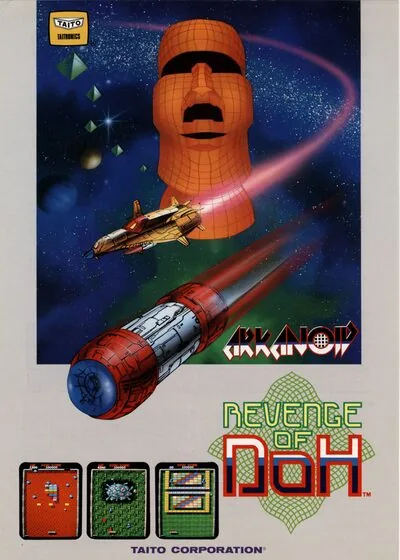

FBA (FinalBurn Alpha)
Arkanoid - Revenge of DOH
- Año: 1987
- Desarrollador: Taito Corporation Japan
- Género: Pala y bola / Rompeladrillos
- Jugadores: 2 jugadores
El sistema de juego es el mismo que el de la primera parte, es decir, el típico machacaladrillos tipo Breakout (el pionero en el género) pero con ítems de ayuda con diferentes efectos. Como novedades para esta secuela se incluyen dos tipos de bloques nuevos. El primero es uno que resiste varios impactos antes de romperse y que con el tiempo se regenera, pero no es imprescindible romperlo para pasar el nivel. El otro es uno que se mueve de izquierda a derecha siempre y cuando no haya obstáculos que impidan este movimiento. También se incluyen nuevos power-ups, pero la novedad más importante es que al finalizar un nivel se nos dan dos salidas diferentes que llevan a distintos niveles, lo que le da rejugabilidad.
El misterioso enemigo conocido como «DOH» ha vuelto para vengarse de la nave espacial «Vaus». El jugador debe tomar de nuevo el control de la Vaus y superar muchos desafíos para destruir a DOH de una vez por todas.
Actualización del popular original de 1986, en Revenge of DOH el jugador recorre 34 rondas, sacadas de un total de 64. Se diferencia de su predecesor por la introducción de las «puertas de salto». Al completar una ronda o al recoger la píldora de ruptura («B»), aparecen dos puertas, abajo a la izquierda y abajo a la derecha de la zona de juego; la Vaus atraviesa una de ellas, y la elección determina qué versión de la siguiente ronda se juega.
El juego también añade dos novedades en los ladrillos. Los ladrillos plateados con muescas, como los plateados normales, necesitan varios golpes para romperse, pero poco después de destruirlos se regeneran con toda su resistencia. Por suerte, no hace falta destruirlos para superar el nivel. Además, algunos ladrillos se mueven de lado a lado mientras no tengan otros ladrillos que se lo impidan.
El juego tiene un minijefe en forma de cerebro gigante, que sirve de práctica para DOH. Para derrotarlo hay que apuntar a su boca.
Controles
Se jugaba con un mando giratorio. Aquí, con el joystick.
| Panel | Juego |
|---|---|
 | Soltar bola |
 | Disparar el láser |
  | Empezar |
 | Meter una moneda |
+  | Salir del juego |
El panel en FBA (FinalBurn Alpha)

Longplay

Partida completa de la recreativa (43 min), de Penta video: Arkanoid: Revenge of Doh (Arcade) [Taito 1987] Complete gameplay 🕹️ No deaths - HD 60fps.